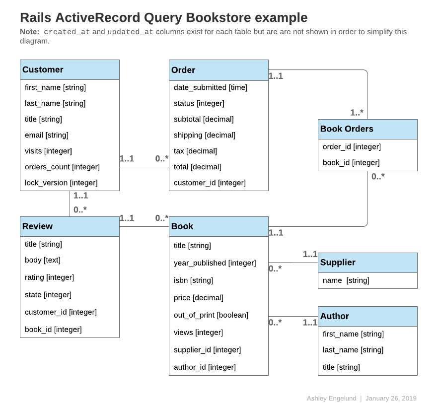

DO NOT READ THIS FILE ON GITHUB, GUIDES ARE PUBLISHED ON https://guides.rubyonrails.org.
Active Record Query Interface
This guide covers different ways to retrieve data from the database using Active Record.
After reading this guide, you will know:
- How to find records using a variety of methods and conditions.
- How to specify the order, retrieved attributes, grouping, and other properties of the found records.
- How to retrieve data efficiently.
- How to join tables and work with data from multiple tables.
- How to use scopes to create reusable query logic.
- How to check for the existence of particular records.
- How to perform calculations on Active Record models.
- How to use locking mechanisms for concurrent access control.
- How to run
explainto analyze queries.
What is the Active Record Query Interface?
If you’re used to working directly with raw SQL, Active Record offers a more readable and expressive way to perform the same operations. It works with most database systems, including MySQL, MariaDB, PostgreSQL, and SQLite, and its method-based interface remains consistent regardless of which database you’re using.
INFO: Basic knowledge of relational database management systems (RDBMS) and
structured query language (SQL) is helpful for getting the most out of this
guide. You can refer to [this SQL tutorial][sqlcourse] or [RDBMS
tutorial][rdbmsinfo] to learn more.
There are also numerous related guides that you may find useful:
- Active Record Basics - Learn about Active Record models, associations, and validations
- Active Record Migrations - Learn how to modify your database schema
- Active Record Validations - Learn how to validate data before it goes into the database
- Active Record Callbacks - Learn how to attach code to certain events in the object lifecycle
- Active Record Associations - Learn about the connection between Active Record models
- Composite Primary Keys - Learn how to work with composite primary keys
- Active Record Transactions - Learn about database transactions
A Bookstore Model Example
Code examples throughout this guide will refer to one or more of the following models:
class Author < ApplicationRecord
has_many :books, -> { order(year_published: :desc) }
endclass Book < ApplicationRecord
belongs_to :supplier
belongs_to :
has_many :reviews
has_and_belongs_to_many :orders, join_table: "books_orders"
scope :in_print, -> { where(out_of_print: false) }
scope :out_of_print, -> { where(out_of_print: true) }
scope :old, -> { where(year_published: ...50.years.ago.year) }
scope :out_of_print_and_expensive, -> { out_of_print.where("price > 500") }
scope :costs_more_than, ->(amount) { where("price > ?", amount) }
endclass Customer < ApplicationRecord
has_many :orders
has_many :reviews
endclass Order < ApplicationRecord
belongs_to :customer
has_and_belongs_to_many :books, join_table: "books_orders"
enum :status, [:shipped, :being_packed, :complete, :cancelled]
scope :created_before, ->(time) { where(created_at: ...time) }
endclass Review < ApplicationRecord
belongs_to :customer
belongs_to :book
enum :state, [:not_reviewed, :published, :hidden]
endclass Supplier < ApplicationRecord
has_many :books
has_many :, through: :books
endNOTE: These models use id as the primary key, unless specified otherwise.

Retrieving Records from the Database
To retrieve records from the database, Active Record provides several finder methods. Each finder method allows you to pass arguments into it to perform certain queries on your database without writing raw SQL.
This section focuses on some of the most common finder methods:
Other query methods, such as where and
group, are covered later in this guide.
For a more complete list of query and finder methods, see the
::ActiveRecord::QueryMethods and ::ActiveRecord::FinderMethods API
documentation.
Finder methods that return a collection, such as where and group, return an
instance of ::ActiveRecord::Relation. Methods that find a single entity,
such as find and first, return a single instance of the model.
The primary operation of ::ActiveRecord::Relation can be summarized as:
- Convert the supplied options to an equivalent SQL query.
- Fire the SQL query and retrieve the corresponding results from the database.
- Instantiate the equivalent Ruby object of the appropriate model for every resulting row.
- Run
after_findand thenafter_initializecallbacks, if any.
Retrieving a Single Record
Active Record provides several different ways of retrieving a single record.
find
Using the [find][] method, you can retrieve the record corresponding to the
specified primary key that matches any supplied options. For example:
# Find the customer with primary key (id) 10.
store(dev)> customer = Customer.find(10)
=> #<Customer id: 10, first_name: "Ryan">
The SQL equivalent of the above is:
SELECT * FROM customers WHERE (customers.id = 10) LIMIT 1
The find method will raise an ::ActiveRecord::RecordNotFound exception if no
matching record is found.
You can also use this method to query for multiple records. Call the find
method and pass in an array of primary keys. The return value will be an array
containing all of the matching records for the supplied primary keys. For
example:
# Find the customers with primary keys 1 and 10.
store(dev)> customers = Customer.find([1, 10]) # OR Customer.find(1, 10)
=> [#<Customer id: 1, first_name: "Lifo">,
#<Customer id: 10, first_name: "Ryan">]
The SQL equivalent of the above is:
SELECT * FROM customers WHERE (customers.id IN (1,10))
WARNING: The find method will raise an ::ActiveRecord::RecordNotFound
exception unless a matching record is found for all of the supplied primary
keys.
If your table uses a composite primary
key, you'll need to pass an array to
find a single record. See the Composite Primary Keys
guide for more details
and examples.
take
The [take][] method retrieves a record without any implicit ordering. For
example:
store(dev)> customer = Customer.take
=> #<Customer id: 1, first_name: "Lifo">
The SQL equivalent of the above is:
SELECT * FROM customers LIMIT 1
The take method returns nil if no record is found and no exception will be
raised.
You can pass in a numerical argument to the take method to return up to that
number of results. For example:
store(dev)> customers = Customer.take(2)
=> [#<Customer id: 1, first_name: "Lifo">,
#<Customer id: 220, first_name: "Sara">]
The SQL equivalent of the above is:
SELECT * FROM customers LIMIT 2
The [take!][] method behaves exactly like take, except that it will raise
::ActiveRecord::RecordNotFound if no matching record is found.
INFO: Since take doesn't specify an ORDER BY clause, the retrieved record
may vary depending on the database engine. Without explicit ordering, SQL
doesn't guarantee which record will be returned.
first
The [first][] method finds the first record ordered by primary key (default).
For example:
store(dev)> customer = Customer.first
=> #<Customer id: 1, first_name: "Lifo">
The SQL equivalent of the above is:
SELECT * FROM customers ORDER BY customers.id ASC LIMIT 1
The first method returns nil if no matching record is found and no exception
will be raised.
If your default scope
contains an order method,
first will return the first record according to this ordering.
You can pass in a numerical argument to the first method to return up to that
number of results. For example:
store(dev)> customers = Customer.first(3)
=> [#<Customer id: 1, first_name: "Lifo">,
#<Customer id: 2, first_name: "Fifo">,
#<Customer id: 3, first_name: "Filo">]
The SQL equivalent of the above is:
SELECT * FROM customers ORDER BY customers.id ASC LIMIT 3
If your model uses composite primary keys, see the Composite Primary Keys guide for details on finder behavior and ordering.
On a collection that is ordered using order, first will return the first
record ordered by the specified attribute for order.
store(dev)> customer = Customer.order(:first_name).first
=> #<Customer id: 2, first_name: "Fifo">
The SQL equivalent of the above is:
SELECT * FROM customers ORDER BY customers.first_name ASC LIMIT 1
The [first!][] method behaves exactly like first, except that it will raise
::ActiveRecord::RecordNotFound if no matching record is found.
last
The [last][] method finds the last record ordered by primary key (default).
For example:
store(dev)> customer = Customer.last
=> #<Customer id: 221, first_name: "Russel">
The SQL equivalent of the above is:
SELECT * FROM customers ORDER BY customers.id DESC LIMIT 1
The last method returns nil if no matching record is found and no exception
will be raised.
If your model uses composite primary keys, see the Composite Primary Keys guide for details on finder behavior and ordering.
If your default scope
contains an order method,
last will return the last record according to this ordering.
You can pass in a numerical argument to the last method to return up to that
number of results. For example:
store(dev)> customers = Customer.last(3)
=> [#<Customer id: 219, first_name: "James">,
#<Customer id: 220, first_name: "Sara">,
#<Customer id: 221, first_name: "Russel">]
The SQL equivalent of the above is:
SELECT * FROM customers ORDER BY customers.id DESC LIMIT 3
On a collection that is ordered using order, last will return the last
record ordered by the specified attribute for order.
store(dev)> customer = Customer.order(:first_name).last
=> #<Customer id: 220, first_name: "Sara">
The SQL equivalent of the above is:
SELECT * FROM customers ORDER BY customers.first_name DESC LIMIT 1
The [last!][] method behaves exactly like last, except that it will raise
::ActiveRecord::RecordNotFound if no matching record is found.
find_by
The [find_by][] method finds the first record matching some conditions. For
example:
store(dev)> Customer.find_by(first_name: "Lifo")
=> #<Customer id: 1, first_name: "Lifo">
store(dev)> Customer.find_by(first_name: "Jon")
=> nil
It is equivalent to writing:
Customer.where(first_name: "Lifo").takeThe SQL equivalent of the above is:
SELECT * FROM customers WHERE (customers.first_name = "Lifo") LIMIT 1
Note that there is no ORDER BY in the above SQL. If your find_by conditions
can match multiple records, you should apply an order to
guarantee a deterministic result.
The [find_by!][] method behaves exactly like find_by, except that it will
raise ::ActiveRecord::RecordNotFound if no matching record is found. For
example:
store(dev)> Customer.find_by!(first_name: "does not exist")
ActiveRecord::RecordNotFound
This is equivalent to writing:
Customer.where(first_name: "does not exist").take!If you are using composite primary
keys, see the Conditions with
id section of
the Composite Primary Keys guide for the find_by(id:) behavior.
Dynamic Finder Methods
For every field (also known as an attribute) you define in your table, Active
Record dynamically provides a finder method. If you have a field called
first_name on your Customer model for example, you get the
find_by_first_name finder method for free from Active Record.
store(dev)> Customer.find_by_first_name("Bhumi")
=> #<Customer id: 25, first_name: "Bhumi">
If you also have a locked field on the Customer model, you also get a
find_by_locked method.
You can specify an exclamation point (!) on the end of the dynamic finders to
get them to raise an ::ActiveRecord::RecordNotFound error if they do not return
any records:
store(dev)> Customer.find_by_first_name!("Ryan")
ActiveRecord::RecordNotFound
If you want to find both by first_name and orders_count, you can chain these
finders together by simply typing _and_ between the fields.
For example:
store(dev)> Customer.find_by_first_name_and_orders_count("Bhumi", 5)
=> #<Customer id: 25, first_name: "Bhumi">
Retrieving Multiple Records
Active Record provides several methods for retrieving multiple records from the
database. The most basic method is [all][], which returns all records for the
model.
store(dev)> customers = Customer.all
=> [#<Customer id: 1, first_name: "Lifo">,
#<Customer id: 2, first_name: "Fifo">, ...]
The SQL equivalent of the above is:
SELECT * FROM customers
The all method returns an ::ActiveRecord::Relation object, which allows you to
chain additional query methods. For example, you can combine it with [where][]
to filter records:
store(dev)> customers = Customer.all.where(active: true)
=> [#<Customer id: 1, first_name: "Lifo", active: true>,
#<Customer id: 3, first_name: "Joe", active: true>]
This is the same as:
customers = Customer.where(active: true)The SQL equivalent is:
SELECT * FROM customers WHERE (customers.active = true)
Since all returns an ::ActiveRecord::Relation and relations are lazy-loaded,
calling all first is optional and doesn't change the query behavior.
NOTE: In the console, Customer.all appears to execute the query because the
return value is displayed by calling inspect, which loads the records.
You can also use other methods like [order][], [limit][], and [group][] to
further refine your queries. These methods are covered in detail in the
Filtering Records, Ordering Records,
Limit and Offset, and Grouping Records
sections.
TIP: For large datasets, consider using the batch processing methods described later in this section to avoid loading all records into memory at once.
Understanding Method Chaining
Active Record supports Method Chaining, which allows us to use multiple Active Record methods together in a simple and straightforward way.
You can chain methods in a statement when the previous method called returns an
::ActiveRecord::Relation, like all, where, and joins. Methods that
return a single record must be at the end of the statement. You can read more
about retrieving a single record in the Retrieving a Single Record
Section.
When an Active Record method is called, the query is not immediately generated and sent to the database. Instead, the query is sent only when the data is actually needed. So each example below generates a single query.
NOTE: In the Rails console, queries may appear to execute unexpectedly because
the console calls inspect on the result to display it. This triggers the query
execution even if you're just exploring the relation object. For example, typing
Customer.where(active: true) in the console will execute the query immediately
to show you the results, even though the relation is lazy-loaded by default.
Retrieving Filtered Data from Multiple Tables
Customer
.select("customers.id, customers.last_name, reviews.body")
.joins(:reviews)
.where("reviews.created_at > ?", 1.week.ago)This will generate the following SQL:
SELECT customers.id, customers.last_name, reviews.body
FROM customers
INNER JOIN reviews
ON reviews.customer_id = customers.id
WHERE (reviews.created_at > "2019-01-08")
Retrieving Specific Data from Multiple Tables
Book
.select("books.id, books.title, authors.first_name")
.joins(:)
.find_by(title: "Abstraction and Specification in Program Development")This will generate the following SQL:
SELECT books.id, books.title, authors.first_name
FROM books
INNER JOIN authors
ON authors.id = books.author_id
WHERE books.title = $1 [["title", "Abstraction and Specification in Program Development"]]
LIMIT 1
NOTE: If a query matches multiple records, find_by will fetch only the first
one and ignore the others, as specified by the LIMIT 1 statement above.
Finding Records and Values
You can find records and values in the database using the following methods.
find_by_sql
If you'd like to use your own SQL to find records in a table you can use
[find_by_sql][]. The find_by_sql method will return an array of records even
if the underlying query returns just a single record. For example, you could run
this query:
store(dev)> Customer.find_by_sql("SELECT * FROM customers INNER JOIN orders ON customers.id = orders.customer_id ORDER BY customers.created_at desc")
=> [#<Customer id: 1, first_name: "Lucas" ...>,
#<Customer id: 2, first_name: "Jan" ...>, ...]
find_by_sql provides you with a simple way of making custom calls to the
database and retrieving instantiated records.
select_all
find_by_sql has a close relative called [lease_connection.select_all][].
select_all will retrieve results from the database using custom SQL just like
find_by_sql but will not instantiate them. This method will return an instance
of ::ActiveRecord::Result class and calling to_a on it returns an array of hashes where each hash represents a row.
store(dev)> Customer.lease_connection.select_all("SELECT first_name, created_at FROM customers WHERE id = \"1\"").to_a
=> [{"first_name"=>"Rafael", "created_at"=>"2012-11-10 23:23:45.281189"},
{"first_name"=>"Eileen", "created_at"=>"2013-12-09 11:22:35.221282"}]
pluck
[pluck][] can be used to pick the value(s) from the named column(s) in the
current relation. It accepts a list of column names as an argument and returns
an array of values of the specified columns with the corresponding data type.
store(dev)> Book.where(out_of_print: true).pluck(:id)
SELECT id FROM books WHERE out_of_print = true
=> [1, 2, 3]
store(dev)> Order.distinct.pluck(:status)
SELECT DISTINCT status FROM orders
=> ["shipped", "being_packed", "cancelled"]
store(dev)> Customer.pluck(:id, :first_name)
SELECT customers.id, customers.first_name FROM customers
=> [[1, "David"], [2, "Fran"], [3, "Jose"]]
pluck makes it possible to replace code like:
Customer.select(:id).map { |c| c.id }
# or
Customer.select(:id).map(&:id)
# or
Customer.select(:id, :first_name).map { |c| [c.id, c.first_name] }with:
Customer.pluck(:id)
# or
Customer.pluck(:id, :first_name)Unlike select, pluck directly converts a database result into a Ruby
Array, without constructing ActiveRecord objects. This can mean better
performance for a large or frequently-run query. However, any model method
overrides will not be available. For example:
class Customer < ApplicationRecord
def first_name
"I am #{super}"
end
endstore(dev)> Customer.select(:first_name).map(&:first_name)
=> ["I am David", "I am Jeremy", "I am Jose"]
store(dev)> Customer.pluck(:first_name)
=> ["David", "Jeremy", "Jose"]
You are not limited to querying fields from a single table, you can query multiple tables as well.
store(dev)> Order.joins(:customer, :books).pluck("orders.created_at, customers.email, books.title")
Furthermore, unlike select and other Relation scopes, pluck triggers an
immediate query, and thus cannot be chained with any further scopes, although it
can work with scopes already constructed earlier:
store(dev)> Customer.pluck(:first_name).limit(1)
NoMethodError: undefined method `limit' for #<Array:0x007ff34d3ad6d8>
store(dev)> Customer.limit(1).pluck(:first_name)
=> ["David"]
NOTE: You should also know that using pluck will trigger eager loading if the
relation object contains include values, even if the eager loading is not
necessary for the query. For example:
store(dev)> assoc = Customer.includes(:reviews)
store(dev)> assoc.pluck(:id)
SELECT "customers"."id" FROM "customers" LEFT OUTER JOIN "reviews" ON "reviews"."id" = "customers"."review_id"
One way to avoid this is to unscope the includes:
store(dev)> assoc.unscope(:includes).pluck(:id)
pick
[pick][] can be used to pick the value(s) from the named column(s) in the
current relation. It accepts a list of column names as an argument and returns
the first row of the specified column values with corresponding data type.
pick is a short-hand for relation.limit(1).pluck(*column_names).first, which
is primarily useful when you already have a relation that is limited to one row.
pick makes it possible to replace code like:
Customer.where(id: 1).pluck(:id).firstwith:
Customer.where(id: 1).pick(:id)
# => 1ids
[ids][] can be used to pluck all the IDs for the relation using the table's
primary key.
store(dev)> Customer.ids
SELECT id FROM customers
If you are using a different primary_key this will be used instead:
class Customer < ApplicationRecord
self.primary_key = "customer_id"
endstore(dev)> Customer.ids
SELECT customer_id FROM customers
Finding or Building a New Record
It's common that you need to find a record or create it if it doesn't exist. You
can do that with the find_or_create_by and find_or_create_by! methods.
find_or_create_by
The [find_or_create_by][] method checks whether a record with the specified
attributes exists. If it doesn't, then create is called.
Suppose you want to find a customer with the email "andy@example.com", and if there's no customer with that email, then you want to create one. You can do this by running:
store(dev)> Customer.find_or_create_by(email: "andy@example.com")
=> #<Customer id: 5, email: "andy@example.com", last_name: nil, title: nil, visits: 0, orders_count: nil, lock_version: 0, created_at: "2019-01-17 07:06:45", updated_at: "2019-01-17 07:06:45">
The SQL generated by this method will look like this:
SELECT *
FROM customers
WHERE (customers.email = "andy@example.com")
LIMIT 1
BEGIN
INSERT INTO customers (created_at, email, locked, orders_count, updated_at) VALUES ("2011-08-30 05:22:57", "andy@example.com", 1, NULL, "2011-08-30 05:22:57")
COMMIT
find_or_create_by returns either the record that already exists or the new
record. In this case, we didn't already have a customer with that email so the
record is created and returned.
The new record might not be saved to the database; that depends on whether
validations passed or not (just like create).
Suppose you want to set the locked attribute to false if you're creating a
new record, but you don't want to include it in the query. You want to find the
customer with the email "andy@example.com", and if that customer doesn't exist,
then create a customer with that email which is not locked.
You can achieve this in two ways. The first is to use create_with:
Customer.create_with(locked: false).find_or_create_by(email: "andy@example.com")The second way is using a block:
Customer.find_or_create_by(email: "andy@example.com") do |c|
c.locked = false
endThe block will only be executed if the customer is being created. The second time we run this code, the block will be ignored.
NOTE: find_or_create_by is not atomic and can have race conditions. In
concurrent scenarios, two processes might both check for a record's existence at
the same time, find it doesn't exist, and both try to create it, potentially
resulting in duplicate records. To avoid race conditions, ensure you have a
unique constraint on the database column(s) you're querying, or consider using
create_or_find_by instead, which handles uniqueness
constraint violations atomically.
find_or_create_by!
You can also use [find_or_create_by!][] to raise an exception if the new
record is invalid. Validations are not covered on this guide, however let's
assume that you have temporarily added the following validation to your
Customer model:
validates :orders_count, presence: trueIf you try to create a new Customer without passing an orders_count, then
the record will be invalid and an exception will be raised:
store(dev)> Customer.find_or_create_by!(first_name: "Andy")
ActiveRecord::RecordInvalid: Validation failed: Orders count can't be blank
find_or_initialize_by
The [find_or_initialize_by][] method will work just like find_or_create_by
but it will call new instead of create. This means that a new model instance
will be created in memory but won't be saved to the database.
You can use find_or_initialize_by to find the customer named 'Nina':
store(dev)> nina = Customer.find_or_initialize_by(first_name: "Nina")
=> #<Customer id: nil, first_name: "Nina", orders_count: 0, locked: true, created_at: "2011-08-30 06:09:27", updated_at: "2011-08-30 06:09:27">
store(dev)> nina.persisted?
=> false
store(dev)> nina.new_record?
=> true
Since the record is not yet stored in the database, the SQL generated will look like this:
SELECT * FROM customers WHERE (customers.first_name = "Nina") LIMIT 1
When you want to save it to the database, you can call save:
store(dev)> nina.save
=> true
create_or_find_by
The [create_or_find_by][] method tries to create a record with the given
attributes. If a record with those attributes already exists (indicated by a
uniqueness constraint violation), it will find and return that existing record
instead. This method is atomic and avoids race conditions that can occur with
find_or_create_by.
store(dev)> Customer.create_or_find_by(first_name: "Andy")
=> #<Customer id: 5, first_name: "Andy", last_name: nil, title: nil, visits: 0, orders_count: nil, lock_version: 0, created_at: "2019-01-17 07:06:45", updated_at: "2019-01-17 07:06:45">
The SQL generated by this method looks like this on first call:
BEGIN
INSERT INTO customers (created_at, first_name, locked, orders_count, updated_at) VALUES ("2011-08-30 05:22:57", "Andy", 1, NULL, "2011-08-30 05:22:57")
COMMIT
If the record already exists (due to a uniqueness constraint), the creation will fail and the method will find the existing record:
BEGIN
INSERT INTO customers (created_at, first_name, locked, orders_count, updated_at) VALUES ("2011-08-30 05:22:57", "Andy", 1, NULL, "2011-08-30 05:22:57")
ROLLBACK
SELECT *
FROM customers
WHERE (customers.first_name = "Andy")
LIMIT 1
The key difference between create_or_find_by and find_or_create_by is the
order of operations and atomicity:
find_or_create_by: First tries to find, then creates if not found. This is not atomic and can have race conditions where duplicate records may be created.create_or_find_by: First tries to create, then finds if creation fails due to uniqueness constraint violation. This is atomic and prevents race conditions.
IMPORTANT: For create_or_find_by to work correctly, you must have a unique
constraint on the attribute or attributes being queried. Without that
constraint, the method can raise duplicate key violations. This method is most
appropriate in situations where you expect the record to be created most of the
time, where a unique constraint already exists on the relevant attributes, and
where you want to avoid race conditions that might otherwise result in duplicate
records.
create_or_find_by!
You can also use [create_or_find_by!][] to raise an exception if the record
creation fails for reasons other than uniqueness constraint violations. This is
similar to find_or_create_by! but with the create-first, atomic approach.
store(dev)> Customer.create_or_find_by!(first_name: "Andy", orders_count: 5)
=> #<Customer id: 5, first_name: "Andy", orders_count: 5, ...>
If a validation fails during creation (other than uniqueness), an exception will be raised:
store(dev)> Customer.create_or_find_by!(first_name: "Andy", orders_count: nil)
ActiveRecord::RecordInvalid: Validation failed: Orders count can't be blank
However, if the failure is due to a uniqueness constraint violation, it will
find and return the existing record (just like create_or_find_by), rather than
raising an exception.
Existence of Records
You can check if a record or records exist in the database using the following methods.
exists?
If you want to check for the existence of a record without instantiating the
record there's a method called [exists?][]. This method will query the
database using the same query as find, but instead of returning a record or
collection of records it will return either true or false.
store(dev)> Customer.exists?(1)
SELECT 1 AS one FROM customers WHERE customers.id = 1 LIMIT 1
=> true
The exists? method also takes multiple values, but the catch is that it will
return true if any one of those records exists.
store(dev)> Customer.exists?(id: [1, 2, 3])
=> true
store(dev)> Customer.exists?(first_name: ["Jane", "Sergei"])
=> true
It's even possible to use exists? without any arguments on a model or a
relation.
store(dev)> Customer.where(first_name: "Ryan").exists?
=> true
The above returns true if there is at least one customer with the first_name
'Ryan' and false otherwise.
store(dev)> Customer.exists?
=> true
The above returns false if the customers table is empty and true
otherwise.
any?
You can also use any? to check for existence on a model or relation.
If the records have already been loaded, any? will use the in-memory records
instead of querying the database again:
store(dev)> orders = Order.limit(10).load
SELECT orders.* FROM orders LIMIT 10
store(dev)> orders.any?
=> true
store(dev)> Order.any?
SELECT 1 FROM orders LIMIT 1
=> true
store(dev)> Order.shipped.any?
SELECT 1 FROM orders WHERE orders.status = 0 LIMIT 1
=> true
store(dev)> Book.where(out_of_print: true).any?
=> true
store(dev)> Customer.first.orders.any?
=> true
many?
You can use many? to check whether more than one record exists on a model or
relation. It uses SQL count unless the records have already been loaded.
store(dev)> Order.many?
SELECT COUNT(*) FROM (SELECT 1 FROM orders LIMIT 2)
=> true
store(dev)> Order.shipped.many?
SELECT COUNT(*) FROM (SELECT 1 FROM orders WHERE orders.status = 0 LIMIT 2)
=> true
store(dev)> Book.where(out_of_print: true).many?
=> true
store(dev)> Customer.first.orders.many?
=> true
Retrieving Multiple Records in Batches
We often need to iterate over a large set of records, for example, when sending a newsletter to many customers, or when exporting data.
You may be tempted to use the following approach:
# This may consume too much memory if the table is big.
Customer.all.each do |customer|
NewsMailer.weekly(customer).deliver_now
endHowever, this approach becomes increasingly impractical as the table size
increases, since Customer.all.each instructs Active Record to fetch the
entire table in a single pass, build a model record per row, and then keep the
entire array of model records in memory. If we have a large number of records,
the entire collection may exceed the amount of memory available.
Rails provides two methods that address this problem by dividing records into memory-friendly batches for processing:
- The first method,
find_each, retrieves a batch of records and then yields each record to the block individually as a model. - The second method,
find_in_batches, retrieves a batch of records and then yields the entire batch to the block as an array of models.
NOTE: The find_each and find_in_batches methods are intended for use in the
batch processing of a large number of records that wouldn't fit in memory all at
once. If you just need to loop over a thousand records then the regular find
methods are the preferred option.
find_each
The [find_each][] method retrieves records in batches and then yields each
one to the block. In the following example, find_each retrieves customers in
batches of 1,000 and yields them to the block one by one:
Customer.find_each do |customer|
NewsMailer.weekly(customer).deliver_now
endNOTE: The default batch size is 1,000, but this can be customized. See Options
for find_each for more details.
This process is repeated, fetching more batches as needed, until all of the records have been processed.
As seen above, find_each works on model classes. It also works on relations as
long as they have no ordering, since the method needs to force an order
internally to iterate.
Customer.where(weekly_subscriber: true).find_each do |customer|
NewsMailer.weekly(customer).deliver_now
endIf an order is present in the relation, the behavior depends on the flag
[config.active_record.error_on_ignored_order][]. If this flag is set to true,
ArgumentError is raised, otherwise the order is ignored and a warning issued,
which is the default behavior. This can be overridden with the option
:error_on_ignore, explained below.
Options for find_each
:batch_size
The :batch_size option allows you to specify the number of records to be
retrieved in each batch, before being passed individually to the block. For
example, to retrieve records in batches of 5,000, you can use the following
code:
Customer.find_each(batch_size: 5000) do |customer|
NewsMailer.weekly(customer).deliver_now
end:start
By default, records are fetched in ascending order of the primary key. The
:start option allows you to configure the first ID of the sequence whenever
the lowest ID is not the one you need. This would be useful, for example, if you
wanted to resume an interrupted batch process, provided you saved the last
processed ID as a checkpoint.
For example, to send newsletters only to customers with the primary key starting from 2000:
Customer.find_each(start: 2000) do |customer|
NewsMailer.weekly(customer).deliver_now
end:finish
Similar to the :start option, :finish allows you to configure the last ID of
the sequence whenever the highest ID is not the one you need. This would be
useful, for example, if you wanted to run a batch process using a subset of
records based on :start and :finish.
For example, to send newsletters only to customers with the primary key starting from 2000 up to including 9999:
Customer.find_each(start: 2000, finish: 9999) do |customer|
NewsMailer.weekly(customer).deliver_now
endAnother example would be if you wanted multiple workers handling the same
processing queue. You could have each worker handle 10,000 records by setting
the appropriate :start and :finish options on each worker.
:error_on_ignore
Overrides the application config to specify if an error should be raised when an order is present in the relation.
:order
Specifies the primary key order (can be :asc or :desc). Defaults to :asc.
Customer.find_each(order: :desc) do |customer|
NewsMailer.weekly(customer).deliver_now
endfind_in_batches
The [find_in_batches][] method is similar to find_each, since both retrieve
batches of records. The difference is that find_in_batches yields batches to
the block as an array of models, instead of individually. The following example
will yield to the supplied block an array of up to 1,000 customers at a time,
with the final block containing any remaining customers:
# Give add_customers an array of 1,000 customers at a time.
Customer.find_in_batches do |customers|
export.add_customers(customers)
endfind_in_batches works on model classes, as seen above, and also on relations
as long as they have no ordering, since the method needs to force an order
internally to iterate:
# Give add_customers an array of 1,000 recently active customers at a time.
Customer.recently_active.find_in_batches do |customers|
export.add_customers(customers)
endOptions for find_in_batches
The find_in_batches method accepts the same options as find_each:
:batch_size
Just like for find_each, batch_size establishes how many records will be
retrieved in each group. For example, retrieving batches of 2,500 records can be
specified as:
Customer.find_in_batches(batch_size: 2500) do |customers|
export.add_customers(customers)
end:start
The start option allows specifying the beginning ID from where records will be
selected. As mentioned before, by default records are fetched in ascending order
of the primary key. For example, to retrieve customers starting on ID: 5000 in
batches of 2,500 records, the following code can be used:
Customer.find_in_batches(batch_size: 2500, start: 5000) do |customers|
export.add_customers(customers)
end:finish
The finish option allows specifying the ending ID of the records to be
retrieved. The code below shows the case of retrieving customers in batches, up
to including the customer with ID: 7000:
Customer.find_in_batches(finish: 7000) do |customers|
export.add_customers(customers)
end:error_on_ignore
The error_on_ignore option overrides the application config to specify if an
error should be raised when a specific order is present in the relation.
Filtering Records
The [where][] method allows you to specify conditions to filter the records
returned, representing the WHERE part of the SQL statement. Conditions can be
specified as a string, array, or hash.
Pure String Conditions
If you want to add conditions to your query, you can include them directly in the where clause.
For example:
Book.where("title = \"Introduction to Algorithms\"")This will find all books where the title field value is 'Introduction to
Algorithms'.
WARNING: Building your own conditions as pure strings can leave you vulnerable
to SQL injection exploits. For example, Book.where("title LIKE '%#{params[:title]}%'") is not safe. See the next section for the preferred way
to handle conditions using an array. For more background, see the Ruby on Rails
Security Guide on SQL injection.
Array Conditions
If a condition is dependent on an argument, you can specify it as an array:
Book.where(["title = ?", params[:title]])You don't have to pass an actual array. A list of arguments is supported as well:
Book.where("title = ?", params[:title])Active Record takes the first argument as the conditions string, and the
remaining arguments replace the question marks (?) in it. To help prevent SQL
injection attacks, Active Record escapes the supplied values and converts them
to the appropriate database type when needed.
Using an unsafe string condition can produce unintended SQL:
unsafe_title = "a' OR '1'='1"
Book.where("title = '#{unsafe_title}'")Using placeholders keeps the value escaped:
Book.where("title = ?", unsafe_title)You can also specify multiple conditions:
Book.where("title = ? AND out_of_print = ?", params[:title], false)In the above example, the first question mark will be replaced with the escaped
value in params[:title], and the second will be replaced with the SQL
representation of false, which depends on the adapter.
Placeholder Conditions
Similar to the (?) replacement style, you can also use named placeholders and
pass a hash of values:
Book.where("title = :title AND out_of_print = :out_of_print",
title: params[:title], out_of_print: false)This can be easier to read when you have several variable conditions.
Conditions That Use LIKE
Although condition arguments are automatically escaped to prevent SQL injection,
SQL LIKE wildcards (i.e., % and _) are not escaped. This may cause
unexpected behavior if an unsanitized value is used in an argument. For example:
Book.where("title LIKE ?", params[:title] + "%")In the above code, the intent is to match titles that start with a
user-specified string. However, any occurrences of % or _ in
params[:title] will be treated as wildcards, leading to surprising query
results. In some circumstances, this may also prevent the database from using an
intended index, leading to a much slower query.
To avoid these problems, use [sanitize_sql_like][] to escape wildcard
characters in the relevant portion of the argument:
Book.where("title LIKE ?",
Book.sanitize_sql_like(params[:title]) + "%")Hash Conditions
Active Record also allows you to pass in hash conditions which can increase the readability of your conditions syntax. With hash conditions, you pass in a hash with keys of the fields you want qualified and the values of how you want to qualify them:
NOTE: Only equality, range, and subset checking are possible with Hash conditions.
Equality Conditions
Book.where(out_of_print: true)This will generate SQL like this:
SELECT * FROM books WHERE (books.out_of_print = true)
The field name can also be a string:
Book.where("out_of_print" => true)In the case of a belongs_to relationship, an association key can be used to specify the model if an Active Record record is used as the value. This method works with polymorphic relationships as well.
= Author.first
Book.where(author: )
Author.joins(:books).where(books: { author: })Hash conditions may also be specified in a tuple-like syntax, where the key is an array of columns and the value is an array of tuples:
Book.where([:, :id] => [[15, 1], [15, 2]])This syntax can also be useful for querying models that use composite primary keys. See the Composite Primary Keys guide for more details and examples.
Range Conditions
Book.where(created_at: (Time.now.midnight - 1.day)..Time.now.midnight)This will find all books created yesterday by using a BETWEEN SQL statement:
SELECT * FROM books WHERE (books.created_at BETWEEN "2008-12-21 00:00:00" AND "2008-12-22 00:00:00")
This demonstrates a shorter syntax for the examples in Array Conditions.
Ranges without a start or without an end are supported and can be used to build less/greater than conditions. For example:
Book.where(created_at: (Time.now.midnight - 1.day)..)This will generate SQL like:
SELECT * FROM books WHERE books.created_at >= "2008-12-21 00:00:00"
NOTE: While beginless ranges support both <= and < by using ..end and
...end, endless ranges will always result in >= for both start.. and
start... ranges. As Ruby doesn't yet support excluding the start of a range,
Rails doesn't support this either.
Subset Conditions
If you want to find records using the IN expression you can pass an array to
the conditions hash:
Customer.where(orders_count: [1, 3, 5])This will generate SQL like this:
SELECT * FROM customers WHERE (customers.orders_count IN (1,3,5))
NOT Conditions
NOT SQL queries can be built by [where.not][]:
Customer.where.not(orders_count: [1, 3, 5])In other words, this query can be generated by calling where with no argument,
then immediately chain with not passing where conditions. This will
generate SQL like this:
SELECT * FROM customers WHERE (customers.orders_count NOT IN (1,3,5))
If a query has a hash condition with non-nil values on a nullable column, the
records that have nil values on the nullable column won't be returned. For
example:
Customer.create!(nullable_country: nil)
Customer.where.not(nullable_country: "UK")
# => []
Customer.create!(nullable_country: "UK")
Customer.where.not(nullable_country: nil)
# => [#<Customer id: 2, nullable_country: "UK">]OR Conditions
OR conditions between two relations can be built by calling [or][] on the
first relation, and passing the second one as an argument.
Customer.where(last_name: "Smith").or(Customer.where(orders_count: [1, 3, 5]))SELECT * FROM customers WHERE (customers.last_name = "Smith" OR customers.orders_count IN (1,3,5))
AND Conditions
AND conditions can be built by chaining where conditions.
Customer.where(last_name: "Smith").where(orders_count: [1, 3, 5])SELECT * FROM customers WHERE customers.last_name = "Smith" AND customers.orders_count IN (1,3,5)
AND conditions for the logical intersection between relations can be built by
calling [and][] on the first relation, and passing the second one as an
argument.
Customer.where(id: [1, 2]).and(Customer.where(id: [2, 3]))SELECT * FROM customers WHERE (customers.id IN (1, 2) AND customers.id IN (2, 3))
Ordering Records
To retrieve records from the database in a specific order, you can use the
[order][] method.
For example, if you're getting a set of records and want to order them in
ascending order by the created_at field in your table:
Book.order(:created_at)
# OR
Book.order("created_at")You could specify ASC or DESC as well:
Book.order(created_at: :desc)
# OR
Book.order(created_at: :asc)
# OR
Book.order("created_at DESC")
# OR
Book.order("created_at ASC")You could also order by multiple fields:
Book.order(title: :asc, created_at: :desc)
# OR
Book.order(:title, created_at: :desc)
# OR
Book.order("title ASC, created_at DESC")
# OR
Book.order("title ASC", "created_at DESC")If you want to call order multiple times, subsequent orders will be appended
to the first:
store(dev)> Book.order("title ASC").order("created_at DESC")
SELECT * FROM books ORDER BY title ASC, created_at DESC
You can also order from a joined table:
Book.includes(:).order(books: { print_year: :desc }, authors: { name: :asc })
# OR
Book.includes(:).order("books.print_year desc", "authors.name asc")WARNING: In most database systems, when using distinct with methods like
select, pluck, or ids, the order method will raise an
::ActiveRecord::StatementInvalid exception unless the field(s) used in the
order clause are included in the select list. See the next section for
selecting fields from the result set.
Selecting Fields
By default, ::ActiveRecord::Relation selects all the fields from the result set
using select *.
To select only a subset of fields from the result set, you can specify the
subset via the [select][] method.
For example, to select only isbn and out_of_print columns:
Book.select(:isbn, :out_of_print)
# OR
Book.select("isbn, out_of_print")The SQL query used by this find call will be somewhat like:
SELECT isbn, out_of_print FROM books
Be careful because this also means you're initializing a model record with only the fields that you've selected. If you attempt to access a field that is not in the initialized record you'll receive the following error:
ActiveModel::MissingAttributeError: missing attribute '<attribute>' for Book
In the above example, <attribute> would be the requested attribute. The id
method will not raise the ActiveRecord::MissingAttributeError, so exercise
caution when working with associations, which need the id method to function
properly.
Limiting Records
To limit the number of records retrieved from the database you can use the
[limit][] and [offset][] methods on the relation.
The limit method specifies how many records should be returned, while offset determines how many records to skip before retrieving results. For example:
Customer.limit(5)This example will return a maximum of 5 customers, and because it specifies no offset, the first 5 in the table will be returned. The SQL it executes looks like this:
SELECT * FROM customers LIMIT 5
Adding offset to that will skip the first 30 records and return the next 5,
starting from the 31st record:
Customer.limit(5).offset(30)The SQL generated by this query looks like:
SELECT * FROM customers LIMIT 5 OFFSET 30
If you would like to only return a single record for each unique value in a
given field, you can use [distinct][]:
Customer.select(:last_name).distinctThis will generate SQL like:
SELECT DISTINCT last_name FROM customers
You can also remove the uniqueness constraint:
# Returns a unique list of last_names
query = Customer.select(:last_name).distinct
# Returns a list of all last_names, even if there are duplicates
query.distinct(false)Grouping Records
If you want to group records, you can use the [group][] method to apply a
GROUP BY clause to the SQL generated by the relation.
For example, if you want to find a collection of orders grouped by status:
Order.group("status")And this will give you a single Order record for each unique status value in
the database.
The SQL that would be executed would be something like this:
SELECT *
FROM orders
GROUP BY status
Total of Grouped Items
To count the items in each group, call [count][] after the group method.
store(dev)> Order.group(:status).count
=> {"being_packed"=>7, "shipped"=>12}
The SQL that would be executed looks like this:
SELECT COUNT (*) AS count_all, status AS status
FROM orders
GROUP BY status
HAVING Conditions
To filter the results of a grouped query, you can use the [having][] method.
Unlike where, which filters rows before grouping, having filters the groups
after they have been aggregated.
For example:
Order.select("customer_id, sum(total) as total_price").
group("customer_id").having("sum(total) > ?", 200)The SQL that would be executed would be something like this:
SELECT customer_id, sum(total) as total_price
FROM orders
GROUP BY customer_id
HAVING sum(total) > 200
This returns the customer ID and total price for each customer, grouped by customer, whose total order value exceeds $200.
You can access the total_price for each order record returned like this:
big_orders = Order.select("customer_id, sum(total) as total_price")
.group("customer_id")
.having("sum(total) > ?", 200)
big_orders[0].total_price
# Returns the total price for the first Order recordOverriding Clauses
There are times when you want to build on an existing relation but change part of its query by removing conditions, replacing them, or redefining how records are selected or ordered. Active Record provides several methods that allow you to override individual clauses without rebuilding the entire relation from scratch.
unscope
You can specify certain conditions to be removed using the [unscope][] method.
For example:
Book.where("id > 100").limit(20).order("id desc").unscope(:order)The SQL that would be executed:
SELECT *
FROM books
WHERE id > 100
LIMIT 20
-- Original query without `unscope`
SELECT *
FROM books
WHERE id > 100
ORDER BY id desc
LIMIT 20
You can also unscope specific where clauses. For example, this will remove the
id condition from the where clause:
Book.where(id: 10, out_of_print: false).unscope(where: :id)This will generate the following SQL:
SELECT books.* FROM books WHERE out_of_print = false
A relation which has used unscope will affect any relation into which it is
merged. In the following example the order is removed from the original
relation:
Book.order("id desc").merge(Book.unscope(:order))This will generate the following SQL:
SELECT books.* FROM books
unscoped
If we wish to remove all scoping for any reason we can use the [unscoped][]
method. This is especially useful if a default_scope is specified in the model
but should not be applied for this particular query. However, unscoped can be
used even when no scopes are present.
Book.unscoped.loadThis method removes all scoping and will do a normal query on the table.
Book.unscoped.allBook.where(out_of_print: true).unscoped.allBoth of the above will generate the following SQL:
SELECT books.* FROM books
unscoped can also accept a block:
Book.unscoped { Book.out_of_print }SELECT books.* FROM books WHERE books.out_of_print = true
only
You can override conditions using the [only][] method. In the following
example only the :order and :where scopes are applied, but the :limit
scope is removed:
Book.where("id > 10").limit(20).order("id desc").only(:order, :where)The SQL that would be executed:
SELECT *
FROM books
WHERE id > 10
ORDER BY id DESC
-- Original query without `only`
SELECT *
FROM books
WHERE id > 10
ORDER BY id DESC
LIMIT 20
except
You can remove specific conditions using the [except][] method. For example:
Book.where("id > 100").limit(20).order("id desc").except(:order)The SQL that will be executed ignores the :order clause:
SELECT *
FROM books
WHERE id > 100
LIMIT 20
-- Original query without `except`
SELECT *
FROM books
WHERE id > 100
ORDER BY id desc
LIMIT 20
You can also remove multiple conditions:
Book.where("id > 100").limit(20).order("id desc").except(:order, :limit)This will generate the following SQL:
SELECT books.* FROM books WHERE id > 100
reselect
The [reselect][] method overrides an existing select statement. For example:
Book.select(:title, :isbn).reselect(:created_at)This will generate the following SQL:
SELECT books.created_at FROM books
Compare this to the case where the reselect clause is not used:
Book.select(:title, :isbn).select(:created_at)This will generate the following SQL:
SELECT books.title, books.isbn, books.created_at FROM books
reorder
The [reorder][] method overrides any previously defined order clause. For
example, if the class definition includes this:
class Book < ApplicationRecord
default_scope { order(year_published: :desc) }
endAnd you execute this:
Book.allThis will generate the following SQL:
SELECT *
FROM books
ORDER BY year_published DESC
You can use the reorder clause to specify a different order:
Book.reorder("year_published ASC")The SQL that would be executed:
SELECT *
FROM books
ORDER BY year_published ASC
The reorder method also works with any previously defined order, not just
association order:
Book.where("id > 100").order("id desc").reorder("title ASC")This will override the previous order("id desc") clause and only order by
title.
reverse_order
The [reverse_order][] method reverses the ordering clause if specified.
Book.where("author_id > 10").order(:year_published).reverse_orderThe SQL that would be executed sets the order to be DESC:
SELECT * FROM books WHERE author_id > 10 ORDER BY year_published DESC
If no ordering clause is specified in the query, the reverse_order orders by
the primary key in reverse order.
Book.where("author_id > 10").reverse_orderThe SQL that would be executed:
SELECT * FROM books WHERE author_id > 10 ORDER BY books.id DESC
The reverse_order method accepts no arguments.
rewhere
The [rewhere][] method overrides an existing, named where condition. For
example:
Book.where(out_of_print: true).rewhere(out_of_print: false)The SQL that would be executed:
SELECT * FROM books WHERE out_of_print = false
If a regular where is used instead, the conditions are combined with AND
rather than replaced:
Book.where(out_of_print: true).where(out_of_print: false)The SQL that would be executed:
SELECT * FROM books WHERE out_of_print = true AND out_of_print = false
regroup
The [regroup][] method overrides an existing, named group condition. For
example:
Book.group(:).regroup(:id)The SQL that would be executed groups by the regrouped columns:
SELECT * FROM books GROUP BY id
If a regular group is used instead of the regroup clause, the group clauses
are combined together:
Book.group(:).group(:id)The SQL executed would be:
SELECT * FROM books GROUP BY author_id, id
Null Relation
The [none][] method returns a chainable relation with no records. Any
subsequent conditions chained to the returned relation will continue generating
empty relations. This is useful in scenarios where you need a chainable response
to a method or a scope that could return zero results.
Book.none # returns an empty Relation and fires no queries.class Book
# Returns reviews if there are at least 5,
# else consider this as non-reviewed book
def highlighted_reviews
if reviews.count >= 5
reviews
else
Review.none # Does not meet minimum threshold yet
end
end
end
# The highlighted_reviews method is expected to always return a Relation.
Book.first.highlighted_reviews.average(:)
# => Returns average rating of a book even when there are less than 5 reviews.Readonly Records
Active Record provides the [readonly][] method on a relation to explicitly
disallow modification of any of the returned records. Any attempt to alter a
readonly record will not succeed, raising an ::ActiveRecord::ReadOnlyRecord
exception.
customer = Customer.readonly.first
customer.visits += 1
customer.save # Raises an ActiveRecord::ReadOnlyRecordAs customer is explicitly set to be a readonly record, the above code will
raise an ::ActiveRecord::ReadOnlyRecord exception when calling customer.save
with an updated value of visits.
Locking Records for Update
Locking is helpful for preventing race conditions when updating records in the database and ensuring atomic updates.
NOTE: An atomic operation is one that completes entirely or not at all, preventing partial updates from being visible to other processes.
Active Record provides two locking mechanisms:
- Optimistic Locking
- Pessimistic Locking
Optimistic Locking
Optimistic locking allows multiple users to access the same record for edits,
and assumes a minimum of conflicts with the data. It does this by checking
whether another process has made changes to a record since it was opened. An
::ActiveRecord::StaleObjectError exception is thrown if that has occurred and
the update is ignored.
Optimistic locking column
In order to use optimistic locking, the table needs to have a column called
lock_version of type integer. Each time the record is updated, Active Record
increments the lock_version column. If an update request is made with a lower
value in the lock_version field than is currently in the lock_version column
in the database, the update request will fail with an
::ActiveRecord::StaleObjectError.
For example:
c1 = Customer.find(1)
c2 = Customer.find(1)
c1.first_name = "Sandra"
c1.save
c1.lock_version # => 1
c2.lock_version # => 0
c2.first_name = "Michael"
c2.save # Raises an ActiveRecord::StaleObjectErrorYou're then responsible for dealing with the conflict by rescuing the exception and either rolling back, merging, or otherwise applying the business logic needed to resolve the conflict.
This behavior can be turned off by setting
ActiveRecord::Base.lock_optimistically = false.
To override the name of the lock_version column, ::ActiveRecord::Base provides
a class attribute called locking_column:
class Customer < ApplicationRecord
self.locking_column = :lock_customer_column
endPessimistic Locking
Pessimistic locking uses a locking mechanism provided by the underlying
database. Using [lock][] when building a relation obtains an exclusive lock on
the selected rows. Relations using lock are usually wrapped inside a
transaction for preventing deadlock conditions.
For example:
Book.transaction do
book = Book.lock.first
book.title = "Algorithms, second edition"
book.save!
endThe above session produces the following SQL for a MySQL backend:
SQL (0.2ms) BEGIN
Book Load (0.3ms) SELECT * FROM books LIMIT 1 FOR UPDATE
Book Update (0.4ms) UPDATE books SET updated_at = "2009-02-07 18:05:56", title = "Algorithms, second edition" WHERE id = 1
SQL (0.8ms) COMMIT
You can also pass raw SQL to the [lock][] method for allowing different types
of locks. For example, MySQL has an expression called LOCK IN SHARE MODE where
you can lock a record but still allow other queries to read it. To specify this
expression just pass it in as the lock option:
Book.transaction do
book = Book.lock("LOCK IN SHARE MODE").find(1)
book.increment!(:views)
endWARNING: Your database needs to support the raw SQL that you pass in to the
lock method, otherwise an ::ActiveRecord::StatementInvalid exception will be
raised.
If you already have an instance of your model, you can start a transaction and
acquire the lock in one go using the [with_lock][] method. The block receives
the current transaction so you can register callbacks:
book = Book.first
# Reload book with a lock before yielding.
book.with_lock do |transaction|
# This block is called within a transaction,
# book is already locked.
transaction.after_commit { puts "hello" }
book.increment!(:views)
endJoining Tables
Joining tables allows you to retrieve records from multiple tables in a single query, for example, fetching books together with their authors.
Active Record provides two finder methods for specifying JOIN clauses on the
resulting SQL; [joins][] and [left_outer_joins][]:
joinsshould be used forINNER JOINor custom queriesleft_outer_joinsshould be used for queries usingLEFT OUTER JOIN
joins
There are multiple ways to use the joins method.
Using a String SQL Fragment
You can just supply the raw SQL specifying the JOIN clause to joins:
Author.joins("INNER JOIN books ON books.author_id = authors.id AND books.out_of_print = FALSE")This will result in the following SQL:
SELECT authors.* FROM authors
INNER JOIN books ON books.author_id = authors.id AND books.out_of_print = FALSE
Using Array/Hash of Named Associations
Active Record lets you use the names of the
associations defined on the model as a shortcut for
specifying JOIN clauses for those associations when using the joins method.
All of the following will produce the expected join queries using INNER JOIN:
Joining a Single Association
Pass the name of the association to join a single table:
Book.joins(:reviews)This produces the following SQL:
SELECT books.* FROM books
INNER JOIN reviews ON reviews.book_id = books.id
The SQL query will return a Book record for all books with reviews.
NOTE: You will see duplicate books if a book has more than one review. If you
want unique books, you can use Book.joins(:reviews).distinct.
Joining Multiple Associations
Pass multiple association names to join multiple tables:
Book.joins(:, :reviews)This produces the following SQL:
SELECT books.* FROM books
INNER JOIN authors ON authors.id = books.author_id
INNER JOIN reviews ON reviews.book_id = books.id
The SQL query will return all books that have an author and at least one review.
NOTE: You will see duplicate books if a book has more than one review. If you
want unique books, you can use Book.joins(:reviews).distinct.
Joining Nested Associations (Single Level)
Pass a hash of association names to join tables on other joined tables:
Book.joins(reviews: :customer)This produces the following SQL:
SELECT books.* FROM books
INNER JOIN reviews ON reviews.book_id = books.id
INNER JOIN customers ON customers.id = reviews.customer_id
The SQL query will return all books that have a review by a customer.
Joining Nested Associations (Multiple Level)
For more complex joining, use a combination of hashes and arrays:
Author.joins(books: [{ reviews: { customer: :orders } }, :supplier])This produces the following SQL:
SELECT authors.* FROM authors
INNER JOIN books ON books.author_id = authors.id
INNER JOIN reviews ON reviews.book_id = books.id
INNER JOIN customers ON customers.id = reviews.customer_id
INNER JOIN orders ON orders.customer_id = customers.id
INNER JOIN suppliers ON suppliers.id = books.supplier_id
The SQL query will return all authors that have a book which has both a review from a customer that has placed an order and a supplier.
Specifying Conditions on the Joined Tables
You can specify conditions on the joined tables using the regular Array and String conditions. Hash conditions provide a special syntax for specifying conditions for the joined tables:
time_range = (Time.now.midnight - 1.day)..Time.now.midnight
Customer.joins(:orders).where("orders.created_at" => time_range).distinctThis will find all customers who have orders that were created yesterday, using
a BETWEEN SQL expression to compare created_at.
An alternative and cleaner syntax is to nest the hash conditions:
time_range = (Time.now.midnight - 1.day)..Time.now.midnight
Customer.joins(:orders).where(orders: { created_at: time_range }).distinctFor more advanced conditions or to reuse an existing named scope, [merge][]
may be used. First, let's add a new named scope to the Order model:
class Order < ApplicationRecord
belongs_to :customer
scope :created_in_time_range, ->(time_range) {
where(created_at: time_range)
}
endNow we can use merge to merge in the created_in_time_range scope:
time_range = (Time.now.midnight - 1.day)..Time.now.midnight
Customer.joins(:orders).merge(Order.created_in_time_range(time_range)).distinctThis will find all customers who have orders that were created yesterday, again
using a BETWEEN SQL expression.
left_outer_joins
Inner joins will only return records that have the associated records.
If you want to select a set of records whether or not they have associated
records you can use the [left_outer_joins][] method.
Customer.left_outer_joins(:reviews).distinct.select("customers.*, COUNT(reviews.*) AS reviews_count").group("customers.id")This produces the following SQL:
SELECT DISTINCT customers.*, COUNT(reviews.*) AS reviews_count FROM customers
LEFT OUTER JOIN reviews ON reviews.customer_id = customers.id
GROUP BY customers.id
It will return all customers with their count of reviews, whether or not they have any reviews at all
where.associated and where.missing
The associated and missing query methods let you select a set of records
based on the presence or absence of an association.
To use where.associated, begin with an empty where followed by associated
with the association name:
Customer.where.associated(:reviews)This produces the following SQL:
SELECT customers.* FROM customers
INNER JOIN reviews ON reviews.customer_id = customers.id
WHERE reviews.id IS NOT NULL
The SQL query will return all customers that have made at least one review.
where.missing is the opposite of where.associated. You can use
where.missing to select records that do not have an association:
Customer.where.missing(:reviews)This produces the following SQL:
SELECT customers.* FROM customers
LEFT OUTER JOIN reviews ON reviews.customer_id = customers.id
WHERE reviews.id IS NULL
The SQL query will return all customers that have not made any reviews.
If a join is already defined associated will use that join instead:
# associated will use LEFT JOIN for this query instead of using JOIN
Post.left_joins(:).where.associated(:)Eager Loading Associations
Eager loading is the mechanism for loading the associated records of the objects
returned by ::ActiveRecord::Relation using the most performant queries possible.
N + 1 Queries Problem
Retrieving a list of records N (where N is a number greater that 1) in a single query can sometimes trigger N extra queries; one for each record.
Consider the following code, which finds 10 books and prints their authors' last_name:
books = Book.limit(10)
books.each do |book|
puts book..last_name
endThis code looks fine at the first sight, but the problem lies within the total number of queries executed. The above code executes 1 (to find 10 books) + 10 (one per each book to load the author) = 11 queries in total.
Solution to N + 1 Queries Problem
Active Record lets you specify in advance all the associations that are going to be loaded.
The methods are:
- [
includes][] - [
preload][] - [
eager_load][]
INFO: Prefer using [includes][], as it is a higher-level method that will use
either [preload][] or [eager_load][] depending on the query.
includes
With includes, Active Record tries to load the specified associations using
the most performant queries.
Revisiting the above case using the includes method, we could rewrite
Book.limit(10) to eager load authors:
books = Book.includes(:).limit(10)
books.each do |book|
puts book..last_name
endThe above code will execute just 2 queries, as opposed to the 11 queries from the original case:
SELECT books.* FROM books
LIMIT 10
SELECT authors.* FROM authors
WHERE authors.id IN (1,2,3,4,5,6,7,8,9,10)
Eager Loading Multiple Associations
Active Record lets you eager load any number of associations with a single
::ActiveRecord::Relation call by using an array, hash, or a nested hash of
array/hash with the includes method.
To eager load multiple associations pass an array of association names:
Customer.includes(:orders, :reviews)This loads all the customers and the associated orders and reviews for each.
To eager load nested associations, pass a hash:
Customer.includes(orders: { books: [:supplier, :] }).find(1)This will find the customer with id 1 and eager load all of the associated orders for it, the books for all of the orders, and the author and supplier for each of the books.
Even though Active Record allows you to specify conditions on eager-loaded associations, the recommended approach is to use joins for this type of query.
However if you must do this, you may use where as you would normally.
Author.includes(:books).where(books: { out_of_print: true })This will generate a query which contains a LEFT OUTER JOIN whereas the
joins method will generate one using the INNER JOIN function instead.
SELECT authors.id AS t0_r0, ... books.updated_at AS t1_r5 FROM authors
LEFT OUTER JOIN books ON books.author_id = authors.id
WHERE (books.out_of_print = true)
If there was no where condition, this will generate the normal set of two
queries.
NOTE: Using where like this will only work when you pass it a Hash. For
SQL-fragments you need to use [references][] to force joined tables:
Author.includes(:books).where("books.out_of_print = true").references(:books)If, in the case of this includes query, there were no books for any authors,
all the authors would still be loaded. By using joins (an INNER JOIN), the
join conditions must match, otherwise no records will be returned.
NOTE: If an association is eager loaded as part of a join, any fields from a custom select clause will not be present on the loaded models. This is because it is ambiguous whether they should appear on the parent record, or the child.
INFO: Prefer using includes, as it is a higher-level method that chooses
between separate queries and a LEFT OUTER JOIN depending on the query.
preload
With preload, Active Record loads each specified association using one query
per association. This is exactly the same as what includes will do when there
are no conditions.
Revisiting the N + 1 queries problem, we could rewrite Book.limit(10) to
preload authors:
books = Book.preload(:).limit(10)
books.each do |book|
puts book..last_name
endThe above code will execute just 2 queries, as opposed to the 11 queries from the original case:
SELECT books.* FROM books
LIMIT 10
SELECT authors.* FROM authors
WHERE authors.id IN (1,2,3,4,5,6,7,8,9,10)
NOTE: The preload method uses an array, hash, or a nested hash of array/hash
in the same way as the includes method to load any number of associations with
a single ::ActiveRecord::Relation call. In simple cases, this is the same
strategy that includes uses. However, unlike the includes method, it is not
possible to specify conditions for preloaded associations.
eager_load
With eager_load, Active Record loads all specified associations using a LEFT OUTER JOIN.
Revisiting the case where N + 1 queries occurred using the eager_load method,
we could rewrite Book.limit(10) to eager load authors:
books = Book.eager_load(:).limit(10)
books.each do |book|
puts book..last_name
endThe above code will execute just 1 query, as opposed to the 11 queries from the original case:
SELECT "books"."id" AS t0_r0, "books"."title" AS t0_r1, ... FROM "books"
LEFT OUTER JOIN "authors" ON "authors"."id" = "books"."author_id"
LIMIT 10
NOTE: The eager_load method uses an array, hash, or a nested hash of
array/hash in the same way as the includes method to load any number of
associations with a single ::ActiveRecord::Relation call. Also, like the
includes method, you can specify conditions for eager loaded associations.
strict_loading
Eager loading can prevent N + 1 queries but you might still be lazy loading some
associations. To make sure no associations are lazy loaded you can enable
[strict_loading][].
By enabling strict loading mode on a relation, an
::ActiveRecord::StrictLoadingViolationError will be raised if the record tries
to lazily load any association:
user = User.strict_loading.first
user.address.city # raises an ActiveRecord::StrictLoadingViolationError
user.comments.to_a # raises an ActiveRecord::StrictLoadingViolationErrorTo enable strict loading for all relations, change
[config.active_record.strict_loading_by_default][] to true:
config.active_record.strict_loading_by_default = trueTo send violations to the logger instead, change
[config.active_record.action_on_strict_loading_violation][] to :log:
config.active_record.action_on_strict_loading_violation = :logstrict_loading!
We can also enable strict loading on the record itself by calling
[strict_loading!][]:
user = User.first
user.strict_loading!
user.address.city # raises an ActiveRecord::StrictLoadingViolationError
user.comments.to_a # raises an ActiveRecord::StrictLoadingViolationErrorstrict_loading! also takes a :mode argument. Setting it to
:n_plus_one_only will only raise an error if an association that will lead to
an N + 1 query is lazily loaded:
user.strict_loading!(mode: :n_plus_one_only)
user.address.city # => "Tatooine"
user.comments.to_a # => [#<Comment:0x00...]
user.comments.first.likes.to_a # raises an ActiveRecord::StrictLoadingViolationErrorstrict_loading option on an association
We can also enable strict loading for a single association by providing the
strict_loading option:
class Author < ApplicationRecord
has_many :books, strict_loading: true
endScopes
Scoping allows you to specify commonly-used queries which can be referenced as
method calls on the association objects or models. With these scopes, you can
use every method previously covered such as where, joins and includes. All
scope bodies should return an ::ActiveRecord::Relation or nil to allow for
further methods (such as other scopes) to be called on it.
To define a simple scope, we use the [scope][] method inside the class,
passing the query that we'd like to run when this scope is called:
class Book < ApplicationRecord
scope :out_of_print, -> { where(out_of_print: true) }
endTo call this out_of_print scope we can call it on either the class:
store(dev)> Book.out_of_print
=> #<ActiveRecord::Relation> # all out of print books
Or on an association consisting of Book records:
store(dev)> author = Author.first
store(dev)> author.books.out_of_print
=> #<ActiveRecord::Relation> # all out of print books by `author`
Passing in Arguments
Your scope can take arguments:
class Book < ApplicationRecord
scope :costs_more_than, ->(amount) { where("price > ?", amount) }
endCall the scope as if it were a class method:
store(dev)> Book.costs_more_than(100.10)
However, this is just duplicating the functionality that would be provided to you by a class method.
class Book < ApplicationRecord
def self.costs_more_than(amount)
where("price > ?", amount)
end
endThese methods will still be accessible on the association objects:
store(dev)> author.books.costs_more_than(100.10)
Using Conditionals
Your scope can utilize conditionals:
class Order < ApplicationRecord
scope :created_before, ->(time) { where(created_at: ...time) if time.present? }
endLike the other examples, this will behave similarly to a class method.
class Order < ApplicationRecord
def self.created_before(time)
where(created_at: ...time) if time.present?
end
endHowever, there is one important caveat: A scope will always return an
::ActiveRecord::Relation object, even if the conditional evaluates to false,
whereas a class method, will return nil. This can cause NoMethodError when
chaining class methods with conditionals, if any of the conditionals return
false.
To make a class method behave like a scope (always return an
::ActiveRecord::Relation), you can return self when the conditional evaluates
to false:
class Order < ApplicationRecord
def self.created_before(time)
if time.present?
where(created_at: ...time)
else
self
end
end
endThis way, the class method will always return an ::ActiveRecord::Relation
object, making it safe to chain just like a scope.
Applying a Default Scope
If you want a scope to be applied across all queries to the model, you can use
the [default_scope][] method within the model itself.
class Book < ApplicationRecord
default_scope { where(out_of_print: false) }
endWhen queries are executed on this model, the SQL query will now look something like this:
SELECT * FROM books WHERE (out_of_print = false)
If you need to do more complex things with a default scope, you can alternatively define it as a class method:
class Book < ApplicationRecord
def self.default_scope
# Should return an ActiveRecord::Relation.
end
endThe default_scope is also applied while creating/building a record when the
scope arguments are given as a Hash. It is not applied while updating a
record.
For example, if you have a default_scope that sets out_of_print to false,
and you create a new book with the out_of_print attribute set to true, the
default_scope will be applied:
class Book < ApplicationRecord
default_scope { where(out_of_print: false) }
endstore(dev)> Book.new
=> #<Book id: nil, out_of_print: false>
store(dev)> Book.unscoped.new
=> #<Book id: nil, out_of_print: nil>
Be aware that when scope arguments are given as an Array, default_scope
cannot convert the arguments to a Hash for default attribute assignment. For
example:
class Book < ApplicationRecord
default_scope { where("out_of_print = ?", false) }
endstore(dev)> Book.new
=> #<Book id: nil, out_of_print: nil>
Merging of Scopes
When you call multiple scopes sequentially, just like where clauses, scopes
are merged using AND conditions.
class Book < ApplicationRecord
scope :in_print, -> { where(out_of_print: false) }
scope :out_of_print, -> { where(out_of_print: true) }
scope :old, -> { where(year_published: ...50.years.ago.year) }
endstore(dev)> Book.out_of_print.old
SELECT books.* FROM books WHERE books.out_of_print = "true" AND books.year_published < 1969
Scopes can also call other scopes:
class Book < ApplicationRecord
scope :out_of_print, -> { where(out_of_print: true) }
scope :old, -> { where(year_published: ...50.years.ago.year) }
scope :out_of_print_and_old, -> { out_of_print.old }
end
You can mix and match scope and where conditions and the final SQL will have
all conditions joined with AND conditions.
store(dev)> Book.in_print.where(price: ...100)
SELECT books.* FROM books WHERE books.out_of_print = "false" AND books.price < 100
If you want the last where clause to take precedence over the previous scope
conditions, you can use the [merge][] method.
store(dev)> Book.in_print.merge(Book.out_of_print)
SELECT books.* FROM books WHERE books.out_of_print = true
One important caveat is that default_scope will be prepended in scope and
where conditions.
For example:
class Book < ApplicationRecord
default_scope { where(year_published: 50.years.ago.year..) }
scope :in_print, -> { where(out_of_print: false) }
scope :out_of_print, -> { where(out_of_print: true) }
endstore(dev)> Book.all
SELECT books.* FROM books WHERE (year_published >= 1969)
store(dev)> Book.in_print
SELECT books.* FROM books WHERE (year_published >= 1969) AND books.out_of_print = false
store(dev)> Book.where(year_published: 2020)
SELECT books.* FROM books WHERE (year_published >= 1969) AND (year_published = 2020)
The default_scope is merged in both scope and where conditions.
Block-Level Scoping
The [scoping][] method allows you to temporarily apply the current relation’s
conditions within a block. Any query executed inside the block will use the
scope of the relation.
Basic Usage
Order.where(customer_id: 1).scoping do
Order.first
end
# SELECT "orders".* FROM "orders" WHERE "orders"."customer_id" = ? ORDER BY "orders"."id" ASC LIMIT ? [["customer_id", 1], ["LIMIT", 1]]In this example, the customer_id: 1 condition is applied automatically because
the block is executed within the relation’s scope.
Applying Scope To All Queries In The Block
By default, scoping applies only to finder methods (such as first, last,
where, etc.). If you want the scope to affect all queries—including update
and delete on individual records, you can pass the option all_queries: true.
Order.where(customer_id: 1).scoping(all_queries: true) do
order = Order.first
order.update(status: :complete)
end
# Order Load (0.1ms) SELECT "orders".* FROM "orders" WHERE "orders"."customer_id" = ? ORDER BY "orders"."id" ASC LIMIT ? [["customer_id", 1], ["LIMIT", 1]]
# TRANSACTION (0.0ms) BEGIN immediate TRANSACTION
# Order Update (0.1ms) UPDATE "orders" SET "status" = ?, "updated_at" = ? WHERE "orders"."id" = ? AND "orders"."customer_id" = ? [["status", 2], ["updated_at", "2025-11-25 11:26:16.089553"], ["id", 1], ["customer_id", 1]]
# TRANSACTION (0.0ms) COMMIT TRANSACTIONThis will ensure that the customer_id: 1 condition is applied to all queries
executed within the block.
Once a block has been entered with all_queries: true, nested blocks cannot
disable it:
Order.where(customer_id: 1).scoping(all_queries: true) do
# This will raise an ArgumentError:
Order.scoping(all_queries: false) do
# ...
end
endRemoving All Scoping
If we wish to remove scoping for any reason we can use the [unscoped][]
method. This is especially useful if a default_scope is specified in the model
and should not be applied for this particular query.
class Book < ApplicationRecord
default_scope { where(out_of_print: false) }
scope :in_print, -> { where(out_of_print: false) }
scope :out_of_print, -> { where(out_of_print: true) }
endThis method removes all scoping and will do a normal query on the table.
store(dev)> Book.unscoped.all
SELECT books.* FROM books
store(dev)> Book.where(out_of_print: true).unscoped.all
SELECT books.* FROM books
unscoped can also accept a block. All queries inside the block will not use
the previously set scopes.
store(dev)> Book.in_print.unscoped { Book.out_of_print }
SELECT books.* FROM books WHERE books.out_of_print = true
Enums
Sometimes you might want to restrict the value of an attribute to a predefined list of values.
An enum lets you define an Array of values for an attribute and refer to them by name. The actual value stored in the database is an integer that has been mapped to one of the values.
Declaring an enum will create scopes, predicate methods and setter methods for all possible values of an enum.
For example:
class Order < ApplicationRecord
enum :status, [:shipped, :being_packaged, :complete, :cancelled]
endGiven the [enum][] declaration above, scopes are created
automatically for each enum value and can be used to find all records with or
without a particular value for status:
store(dev)> Order.shipped
=> #<ActiveRecord::Relation> # all orders with status == :shipped
store(dev)> Order.not_shipped
=> #<ActiveRecord::Relation> # all orders with status != :shipped
Predicate methods are created automatically for each enum value and return
whether the model has that value for the status enum:
store(dev)> order = Order.shipped.first
store(dev)> order.shipped?
=> true
store(dev)> order.complete?
=> false
Instance methods are created automatically for each enum value that will first
update the value of status to the named value and then query whether or not
the status has been successfully set to the value:
store(dev)> order = Order.first
store(dev)> order.shipped!
UPDATE "orders" SET "status" = ?, "updated_at" = ? WHERE "orders"."id" = ? [["status", 0], ["updated_at", "2019-01-24 07:13:08.524320"], ["id", 1]]
=> true
You can read more about enums in the ActiveRecord::Enum documentation.
Calculations
Active Record supports different methods to do calculations in the database.
With these methods you don't need to instantiate ActiveRecord models to make
calculations. Calculating results in the database will generally be more
performant.
This section uses [count][] as an example method in this preamble, but the
same patterns apply to all calculation methods.
All calculation methods work directly on a model:
store(dev)> Customer.count
SELECT COUNT(*) FROM customers
# => 3753
Or on a relation:
store(dev)> Customer.where(first_name: "Ryan").count
SELECT COUNT(*) FROM customers WHERE (first_name = "Ryan")
# => 17
You can also use various finder methods on a relation for performing complex calculations:
store(dev)> Customer.includes("orders").where(first_name: "Ryan", orders: { status: "shipped" }).count
Which will execute:
SELECT COUNT(DISTINCT customers.id) FROM customers
LEFT OUTER JOIN orders ON orders.customer_id = customers.id
WHERE (customers.first_name = "Ryan" AND orders.status = 0)
assuming that Order has enum status: [ :shipped, :being_packed, :cancelled ].
count
If you want to see how many records are in your model's table you could call
Customer.count and that will return the number.
If you want to be more specific and count only customers with a title present in
the database, you can pass :title:
Customer.count(:title)average
If you want to see the average of a certain number in one of your tables you can
call the [average][] method on the class that relates to the table. For
example:
Order.average("subtotal")
# => 3.14159265minimum
If you want to find the minimum value of a field in your table you can call the
[minimum][] method on the class that relates to the table. This method call
will look something like this:
Order.minimum("subtotal")
# => 123.45maximum
If you want to find the maximum value of a field in your table you can call the
[maximum][] method on the class that relates to the table. For example:
Order.maximum("subtotal")
# => 4567.89sum
If you want to find the sum of a field for all records in your table you can
call the [sum][] method on the class that relates to the table. This method
call will look something like this:
Order.sum("subtotal")
# => 12345.67Running explain
You can run [explain][] on a relation. EXPLAIN output varies for each
database.
The following example shows how to run explain on a relation:
Customer.where(id: 1).joins(:orders).explainThe output will vary depending on the database adapter. For example, for MySQL and MariaDB, the output might look like this:
EXPLAIN SELECT `customers`.* FROM `customers` INNER JOIN `orders` ON `orders`.`customer_id` = `customers`.`id` WHERE `customers`.`id` = 1
---------------------------------------------------
| id | select_type | table | type | possible_keys |
---------------------------------------------------
| 1 | SIMPLE | customers | const | PRIMARY |
| 1 | SIMPLE | orders | ALL | NULL |
---------------------------------------------------
--------------------------------------------
| key | key_len | ref | rows | Extra |
--------------------------------------------
| PRIMARY | 4 | const | 1 | |
| NULL | NULL | NULL | 1 | Using where |
--------------------------------------------
2 rows in set (0.00 sec)
Active Record performs pretty printing that emulates the output of the corresponding database shell. Therefore, the same query run with the PostgreSQL adapter would instead yield:
EXPLAIN SELECT "customers".* FROM "customers" INNER JOIN "orders" ON "orders"."customer_id" = "customers"."id" WHERE "customers"."id" = $1 [["id", 1]]
QUERY PLAN
------------------------------------------------------------------------------
Nested Loop (cost=4.33..20.85 rows=4 width=164)
-> Index Scan using customers_pkey on customers (cost=0.15..8.17 rows=1 width=164)
Index Cond: (id = "1"::bigint)
-> Bitmap Heap Scan on orders (cost=4.18..12.64 rows=4 width=8)
Recheck Cond: (customer_id = "1"::bigint)
-> Bitmap Index Scan on index_orders_on_customer_id (cost=0.00..4.18 rows=4 width=0)
Index Cond: (customer_id = "1"::bigint)
(7 rows)
Eager loading may trigger more than one query under the hood, and some queries
may need the results of previous ones. Because of that, explain actually
executes the query, and then asks for the query plans. For example, running:
Customer.where(id: 1).includes(:orders).explainmay yield this for MySQL and MariaDB:
EXPLAIN SELECT `customers`.* FROM `customers` WHERE `customers`.`id` = 1
--------------------------------------------------
| id | select_type | table | type | possible_keys |
--------------------------------------------------
| 1 | SIMPLE | customers | const | PRIMARY |
--------------------------------------------------
--------------------------------------
| key | key_len | ref | rows | Extra |
--------------------------------------
| PRIMARY | 4 | const | 1 | |
--------------------------------------
1 row in set (0.00 sec)
EXPLAIN SELECT `orders`.* FROM `orders` WHERE `orders`.`customer_id` IN (1)
----------------------------------------------
| id | select_type | table | type | possible_keys |
----------------------------------------------
| 1 | SIMPLE | orders | ALL | NULL |
----------------------------------------------
----------------------------------------
| key | key_len | ref | rows | Extra |
----------------------------------------
| NULL | NULL | NULL | 1 | Using where |
----------------------------------------
1 row in set (0.00 sec)
and may yield this for PostgreSQL:
Customer Load (0.3ms) SELECT "customers".* FROM "customers" WHERE "customers"."id" = $1 [["id", 1]]
Order Load (0.3ms) SELECT "orders".* FROM "orders" WHERE "orders"."customer_id" = $1 [["customer_id", 1]]
=> EXPLAIN SELECT "customers".* FROM "customers" WHERE "customers"."id" = $1 [["id", 1]]
QUERY PLAN
----------------------------------------------------------------------------------
Index Scan using customers_pkey on customers (cost=0.15..8.17 rows=1 width=164)
Index Cond: (id = "1"::bigint)
(2 rows)
You can also chain explain with calculation methods like [count][],
[first][], [last][], [average][], [maximum][], [minimum][], [sum][],
and [pluck][] to see the query plan for those operations:
Customer.where(active: true).explain.count
Customer.order(:created_at).explain.first.explain Options
For databases and adapters which support them (currently PostgreSQL, MySQL, and MariaDB), options can be passed to provide deeper analysis.
Using PostgreSQL, the following:
Customer.where(id: 1).joins(:orders).explain(:analyze, :verbose)yields:
EXPLAIN (ANALYZE, VERBOSE) SELECT "shop_accounts".* FROM "shop_accounts" INNER JOIN "customers" ON "customers"."id" = "shop_accounts"."customer_id" WHERE "shop_accounts"."id" = $1 [["id", 1]]
QUERY PLAN
------------------------------------------------------------------------------------------------------------------------------------------------
Nested Loop (cost=0.30..16.37 rows=1 width=24) (actual time=0.003..0.004 rows=0 loops=1)
Output: shop_accounts.id, shop_accounts.customer_id, shop_accounts.customer_carrier_id
Inner Unique: true
-> Index Scan using shop_accounts_pkey on public.shop_accounts (cost=0.15..8.17 rows=1 width=24) (actual time=0.003..0.003 rows=0 loops=1)
Output: shop_accounts.id, shop_accounts.customer_id, shop_accounts.customer_carrier_id
Index Cond: (shop_accounts.id = "1"::bigint)
-> Index Only Scan using customers_pkey on public.customers (cost=0.15..8.17 rows=1 width=8) (never executed)
Output: customers.id
Index Cond: (customers.id = shop_accounts.customer_id)
Heap Fetches: 0
Planning Time: 0.063 ms
Execution Time: 0.011 ms
(12 rows)
Using MySQL or MariaDB, the following:
Customer.where(id: 1).joins(:orders).explain(:analyze)yields:
ANALYZE SELECT `shop_accounts`.* FROM `shop_accounts` INNER JOIN `customers` ON `customers`.`id` = `shop_accounts`.`customer_id` WHERE `shop_accounts`.`id` = 1
--------------------------------------------------------------------------------------------------------------------------------------
| id | select_type | table | type | possible_keys | key | key_len | ref | rows | r_rows | filtered | r_filtered | Extra |
--------------------------------------------------------------------------------------------------------------------------------------
| 1 | SIMPLE | NULL | NULL | NULL | NULL | NULL | NULL | NULL | NULL | NULL | NULL | no matching row in const table |
--------------------------------------------------------------------------------------------------------------------------------------
1 row in set (0.00 sec)
NOTE: EXPLAIN and ANALYZE options vary across MySQL and MariaDB versions. (MySQL 5.7, MySQL 8.0, MariaDB)
Interpreting the Output
Interpretation of the output of EXPLAIN is beyond the scope of this guide. The following pointers may be helpful:
-
SQLite3: EXPLAIN QUERY PLAN
-
MySQL: EXPLAIN Output Format
-
MariaDB: EXPLAIN
-
PostgreSQL: Using EXPLAIN